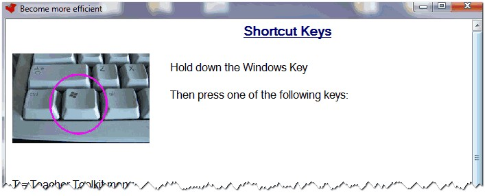

Shortcut Keys
When the Teacher Toolkit is running, it provides you with a range of shortcuts to make things quicker and more effective.
These are listed under the menu SHORTCUT KEYS:

All of these use the WindowsKey (shown above).
Some just make it easier for you to open programs, such as:
WindowsKey and G = Open Google search engine
WindowsKey and W = Open Microsoft Word
WindowsKey and C = Open the calculator
WindowsKey and N = Open Notepad text editor
Some schools lock-down the WindowsKey - to prevent users from accessing secure programs.
If this happens in your school, you can use the ScrollLock key (usually the top right of your keyboard) as an alternative.
This means the examples above will still work with the alternate combination of keys:
ScrollLock Key and G = Open Google search engine
ScrollLock Key and W = Open Microsoft Word
ScrollLock Key and C = Open the calculator
ScrollLock Key and N = Open Notepad text editor